I’ve been considering getting a smaller camera system, which naturally led me to look at Fujifilm’s smaller bodies like the recently announced X-T30. That in turn led me to the controversy surrounding Lightroom’s demosaicing of Fuji’s X-Trans RAW files.
The short version of this controversy is that some people aren’t happy, calling Lightroom’s demosaicing of X-Trans files waxy or like an oil painting, and citing artefacts such as “worms” or "bacteria". Adobe, on the other hand, said that many people are perfectly happy with their rendering, while acknowledging that things aren’t perfect.
Starting from a position of scepticism that Lightroom could be as bad as people say with X-Trans, I decided to investigate for myself. As I don't yet own a Fuji camera, I used a selection of publicly available RAW files from the Fuji X-T3, trying to chose a set with enough variety to expose any demosaicing issues.
The most common workaround for the problem is using a program called Iridient X-Transformer, which converts the Fuji RAF file into a DNG file with the sensor data already demosaiced using Iridient's own algorithm. Adobe also recently released a feature for Lightroom called “Enhance Details”, which people say could potentially replace X-Transformer in their workflow. You run Enhance Details on a RAF file after importing it into Lightroom and, like X-Transformer, it also generates a DNG file containing demosaiced sensor data. I’ll compare both of these options to the Lightroom default rendering.
I’m using the evaluation version of X-Transformer (version 1.1.1) for these tests, which watermarks the image.
Source Photos
Configuring Iridient X-Transformer
X-Transformer is quite configurable, but “RAW Process” is the only option I'm actually interested in, as that is the only option which affects demosaicing. My aim is simply to produce a DNG that is as close to the original RAF as possible, but with the demosaicing already done. The other options either bake in additional changes to the demosaiced output, or override Lightroom’s default handling of the RAW file, neither of which is desirable. I’ll go over these options in more detail below.
Raw Process Option
This is the only option which affects the demosaicing algorithm. There are two options here: Smoother or More Detailed. I’ll test them both.
Sharpening / Noise Reduction Options
These settings are to do with applying Iridient’s own sharpening or noise reduction algorithms to the demosaiced output. Using these options “bakes in” the results to the RAW file, meaning they can’t be later reduced or adjusted in Lightroom, although you could still apply Lightroom’s own sharpening or noise reduction on top.
As we have no particular issues with Lightroom’s sharpening or noise reduction algorithms, only its demosaicing, I’m leaving them set to “None” to keep the DNG as raw as possible.
DNG Baseline Tag Options
There is one baseline tag option for sharpness, and one for noise. These options are quite interesting. The DNG spec says the following about the sharpness tag:
"BaselineSharpness specifies the relative amount of sharpening required for this camera model, compared to a reference camera model. Camera models vary in the strengths of their anti-aliasing filters. Cameras with weak or no filters require less sharpening than cameras with strong anti-aliasing filters.”
The X-T3 has no anti-aliasing filter, implying we might want this set to “Low” or “Very Low”, however I would suggest setting it to “Do Not Include” and I’ll explain why.
When you open a RAW file in Lightroom it applies some default sharpening and noise reduction, but the precise amount depends on the camera. I haven’t found out how Lightroom decides on these values, but I assume it is part of its internal profile for each camera. Let’s assume that the defaults are a sensible starting point for a given camera.
As a quick example, when I open a RAF file from an X-T3 it sets the sharpening slider to 40 by default, where as with a DNG from my Leica SL it is 25 by default. The maximum value is 150.
But, crucially, what “40” means is affected by the BaselineSharpness tag. Setting the baseline sharpness lower means that “40” has less effect compared to setting it higher. You can verify this though experimentation. With baseline sharpness set to low I had to increase the sharpening slider to 60 to get the same amount of sharpening as 40 had when the baseline sharpness was set to “Adobe Standard”.
This means that adjusting this tag will change how much effect Lightroom's default level of sharpening has on the image. If we are trying to change the Lightroom demosaicing behaviour and nothing else then we don’t want to change the default baseline sharpness.
Setting the tag to “Do Not Include” seems to allow Lightroom to fall back on its default behaviour for the camera. I did some tests and for the X-T3 the default behaviour appears to be the same as the “Low” setting, but there is no point in us specifying this explicitly.
Therefore I would recommend setting the tags for both sharpness and noise reduction to “Do Not Include” to avoid overriding the default behaviour.
Turn off Lightroom Sharpening/NR Options
The same argument applies to these settings. Checking this box forces Lightroom to apply zero sharpening and noise reduction by default, rather than what it thinks is best for the camera. As we only want to change the demosaicing behaviour we will leave this unchecked.
Lens Corrections
Choosing “Include as DNG Metadata” will pass through any lens correction data from the original RAF and allow Lightroom to apply the lens corrections itself. The other two options either discard them, or bake the corrections into the demosaiced output in the DNG. We don’t have any problems with Lightroom’s lens correction algorithms, so setting this to “Include as DNG Metadata” keeps the DNG as raw as possible.
DNG Options
The settings in the DNG Options tab are fine at their defaults, although I’ve tweaked them to my liking. I like to include a full size JPEG preview, for example, as I often want to check the focus before Lightroom has had a chance to generate it’s own preview.
Comparing Lightroom and X-Transformer
After configuring X-Transformer, I generated three DNG files for each source RAF file:
- Lightroom Enhance Details
- X-Transformer More Detailed
- X-Transformer Smoother
I used a program called Beyond Compare to do a diff between each of the three DNG files and the default Lightroom rendering. The resulting diff images for the photo of the man is shown below.
The brighter the pixel the greater the difference compared to Lightroom's default rendering. Note that the X-Transformer files have a watermark present as I am using the evaluation version of the software.
Many of the images below are slideshows, which you will need to click through to see the differences being discussed. Looking at them on a large screen also helps.
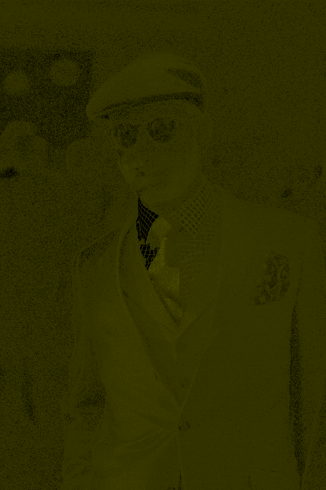
Enhance Details
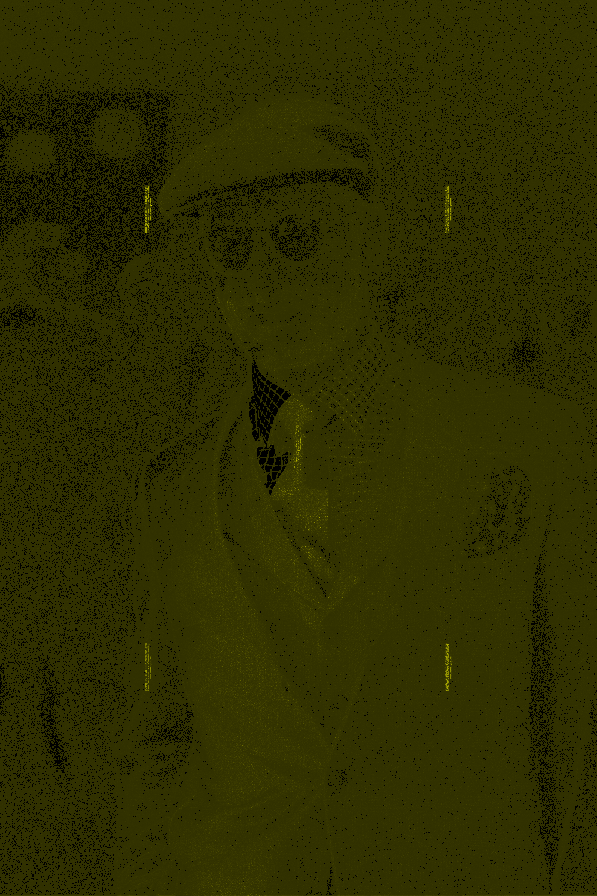
X-Transformer More Detailed
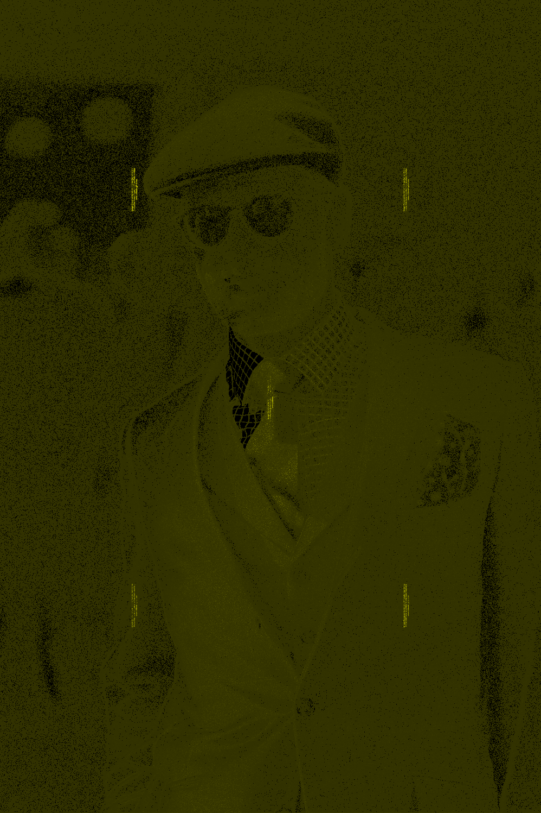
X-Transformer Smoother
The most obvious thing to note here is that there isn't a huge amount of difference between Enhance Details and the two X-Transformer DNGs in terms of the magnitude and location of the changes they are making. His beard, tie, jacket and the pattern on his shirt seem to have been affected most, which makes sense as they have the most fine grained detail. There are other subtle differences, for example Enhance Details seems to have had more of an effect in the dark area in the top left compared to the other two, but it isn't visually obvious in the final image. We'll take a closer look at these areas soon.
When I created the same difference images for the room photo, I realised a problem: The lens corrections are being applied slightly differently for the DNG files which came from X-Transformer. This is why, in the X-Transformer images below, the differences appear to be greater as you move away from the centre. In reality this is caused by a slightly different distortion from the lens corrections, not the demosaicing algorithm. I had similar problems with the photos of the car and the wall. The image of the man above didn't seem to be effected beyond needing to shift the X-Transformer files right and up two pixels to align them.
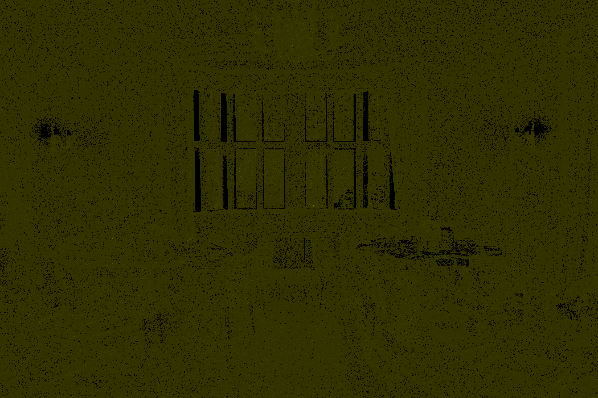
Enhance Details
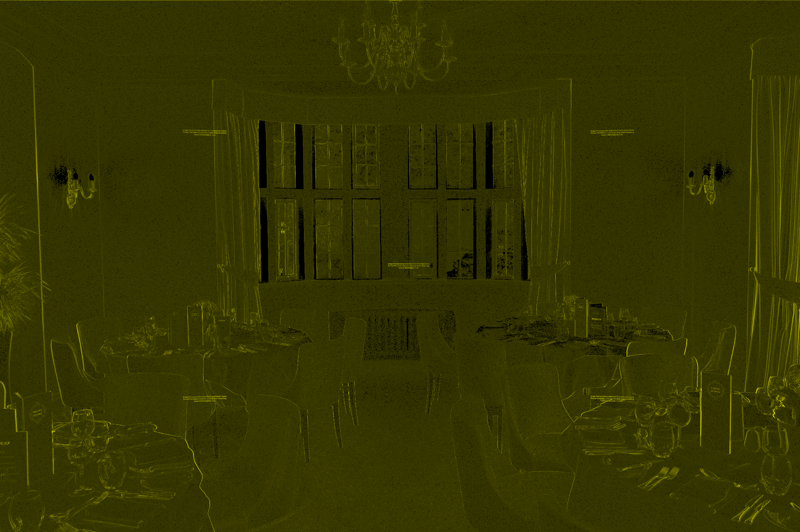
X-Transformer More Detailed
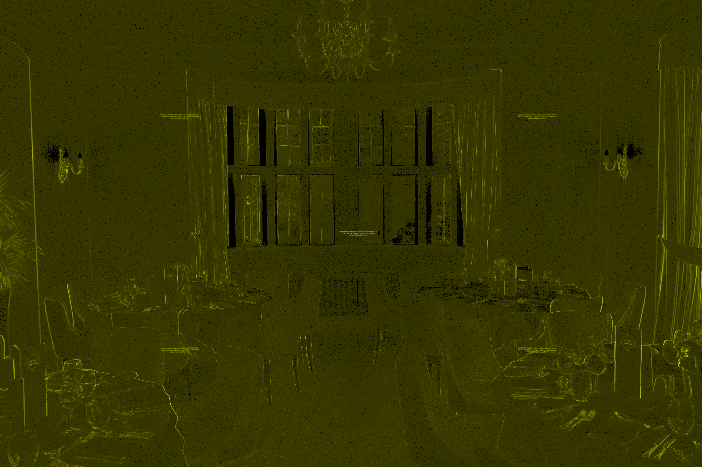
X-Transformer Smoother
Interlude: Lens Correction Differences
To investigate the lens corrections further, I exported from X-Transformer with the three different lens correction options: "Include as DNG Metadata", "Apply Corrections to Image" and "Ignore". You can see the results below, along with what you get importing the RAF file directly into Lightroom.
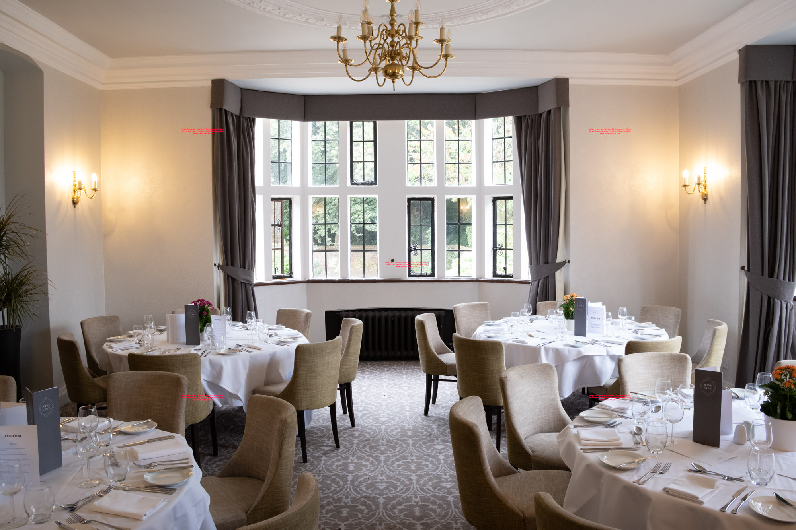
Uncorrected
Lightroom RAF Corrections
X-Transformer RAF Corrections
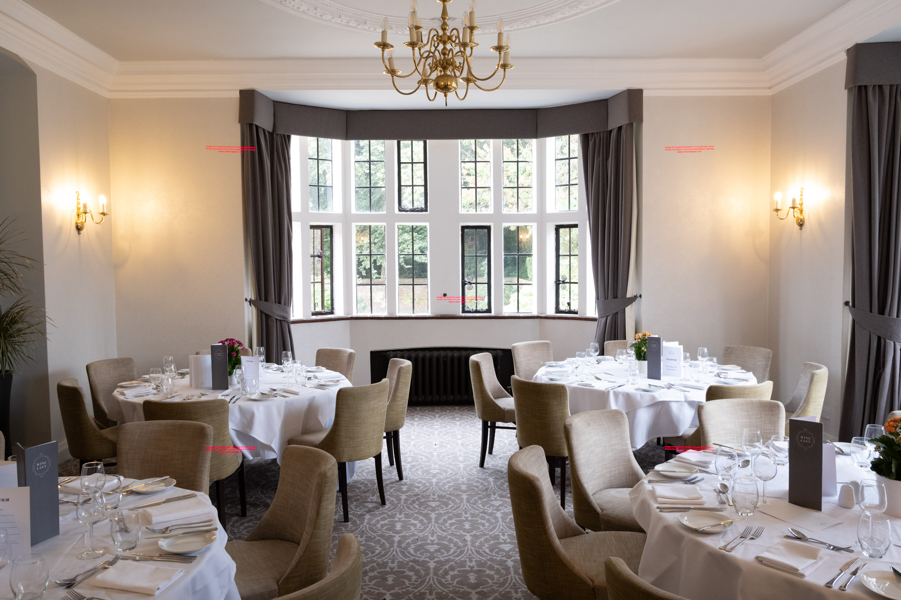
X-Transformer DNG Correction Metadata
There are some interesting points here:
My expectation was that passing the corrections though as DNG metadata would produce the same result in Lightroom as applying the corrections from the original RAF file, but this is not the case.
Instead, passing the corrections though as DNG metadata results in the same final image as having X-Transformer apply the corrections directly to the image during conversion.
You can see that when the corrections are passed through as DNG that the X-Transformer watermark is shifted slightly compared to when X-Transformer applies the corrections itself. This confirms that the corrections are indeed being done in Lightroom. Look closely at the watermark in the top left while moving between the images to see this.
Perhaps when passing the corrections through as DNG metadata X-Transformer must first interpret the lens correction data in the RAF file and translate it into the correct format for DNG. If this translation involves using its own lens correction algorithms in some way then that would explain why Lightroom's corrections end up matching X-Transformer's algorithms.
The X-Transformer corrections and the Lightroom corrections from the original RAF are quite close when compared to the uncorrected image. Probably close enough not to matter. Having said that, looking closer at some of the straight lines in the image is quite interesting:
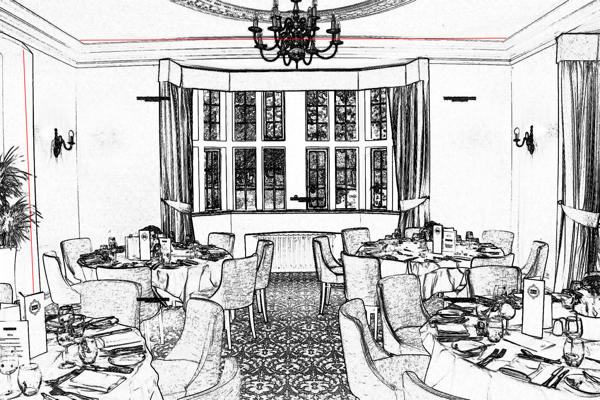
Uncorrected
Lightroom RAF Corrections
X-Transformer DNG Correction Metadata
In the corrected image rendered form the original RAF file the edge of the alcove on the left isn't quite straight; it moves slightly away from the red (straight) reference line at the top and bottom. However in the corrected image using the DNG metadata it looks to be completely straight. The horizontal line at the top is more subtle, but to my eye the same thing is happening if you look closely at the left hand side.
In this image the edge correction after generating a DNG though X-Transformer actually looks marginally better than the edge correction applied by Lightroom directly from the original RAF file.
Remember, this is even with Lightroom applying the lens corrections itself from the X-Transformer DNG metadata.
I think more tests would need to be done here. It is possible that in other circumstances the situation could reverse, and the Lightroom corrections from the RAF might sometimes perform better than the X-Transformer corrections passed though in DNG metadata, but on the basis of this image I would not be overly concerned that the lens corrections coming out of X-Transformer are slightly different than expected.
Back to Demosaicing
The diff images for the final two photos are as you would expect, with most changes occurring where there are fine details. I'll only show the "Enhance Details" versions below due to the lens correction differences making the X-Transformer ones less useful.
Let's look at the actual differences now. Below are 100% crops of some of the interesting areas. I suggest pausing the animation and stepping through the images manually to really appreciate the differences. I'm going to refer to the the original image as RAF, the Lightroom "Enhanced Details" image as ED, the X-Transformer "More Details" image as XD, and the X-Transformer "Smoother" image as XS for brevity.
Notice how the colour of his white stubble is more flesh coloured in the RAF image, and whiter in the others. Notice how the detail in the hairs increases for ED and XD. Notice the red highlights on around the hairs on the far left of the image, which are perhaps better controlled in the RAF. Notice how XS appears to be the softest rendering, even softer than the RAF.
RAF
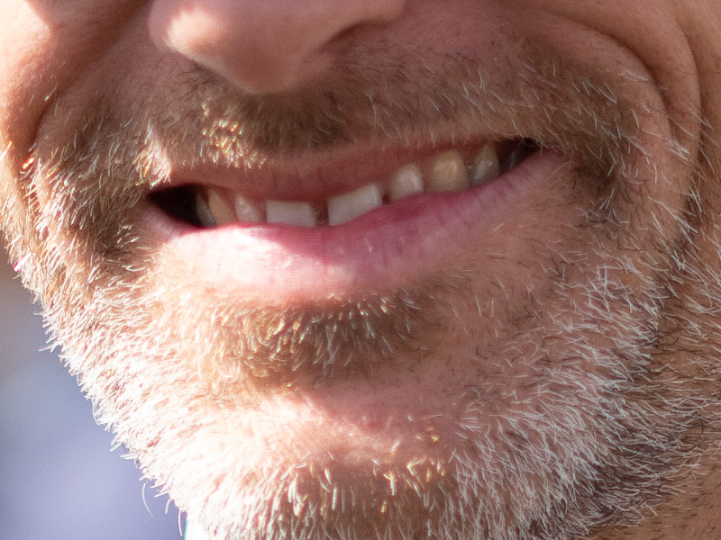
Enhance Details
X-Transformer More Detailed
X-Transformer Smoother
Notice how the detail and colour in his tie change considerably between the images. Notice how the blue threading in his jacket becomes more obvious in the non-RAF images. Notice how the dark blue threaded stripes in his shirt become better defined in the non-RAF images. Notice how XS is again the softest.
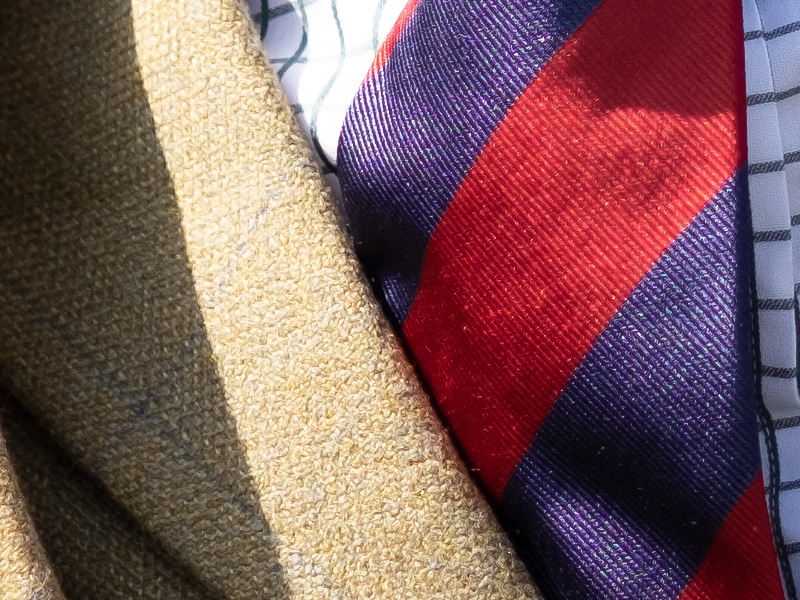
RAF
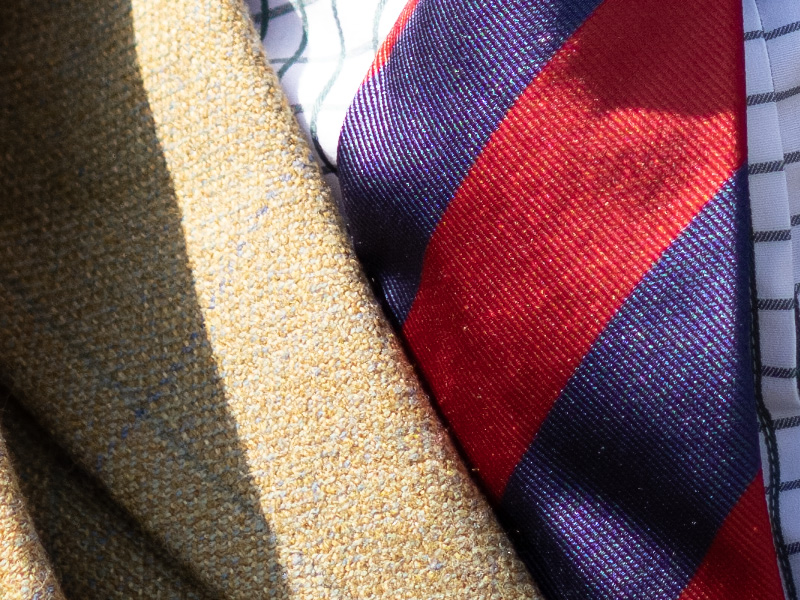
Enhance Details
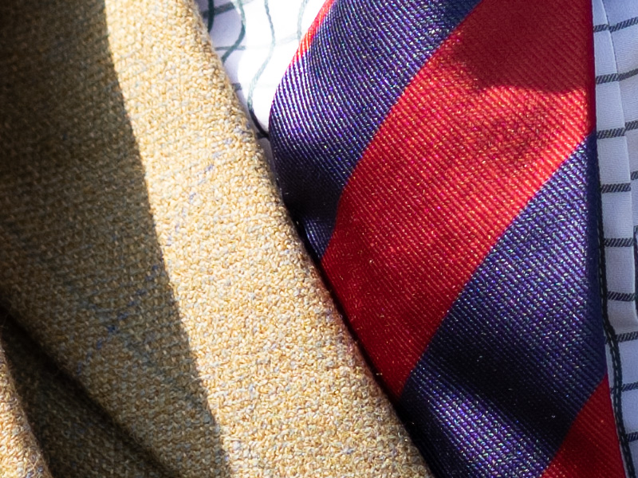
X-Transformer More Detailed
X-Transformer Smoother
Notice the "oil painting" look in the leaves through the window in the RAF image, particularly in through the right hand window. This is fixed in the non-RAF images. Notice how the curves of the iron window furniture become slightly smoother in the non-RAF images. Notice the small trees in front of the wall in the bottom left are less saturated in the RAF image compared to the others.
RAF
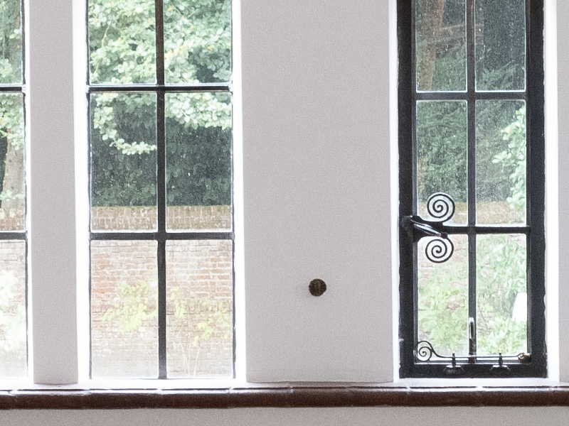
Enhance Details
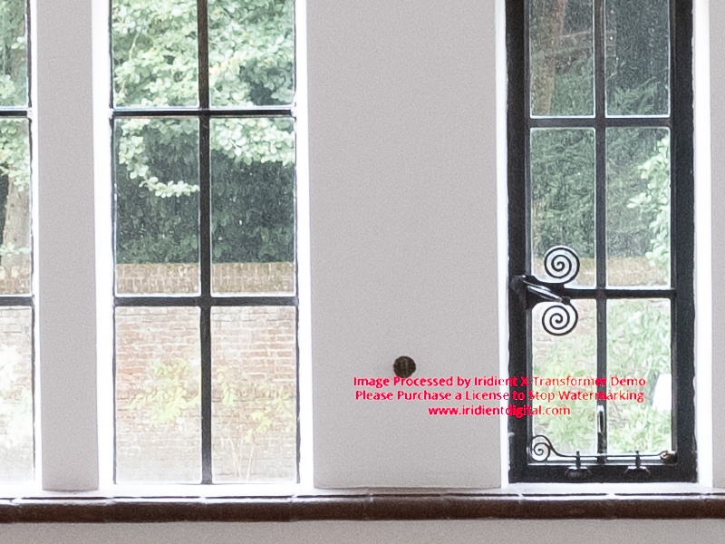
X-Transformer More Detailed
X-Transformer Smoother
Notice how the "FUJIFILM" and "September" text on the menus are better defined in the non-RAF images, and are crisper in the ED and XD images. Notice how the noise in the menu, particularly at the top, becomes more random and less "bacterial" in the non-RAF images. Notice the highlight in the spoon on the left is better controlled in the RAF image.
RAF
Enhance Details
X-Transformer More Detailed
X-Transformer Smoother
Notice how the red becomes more intense in the inner part of the Jaguar logo in the non-RAF images. Notice how XS is again the softest. Notice how the house and tree in the reflection perhaps seems slightly better defined in the original RAF image.
RAF
Enhance Details
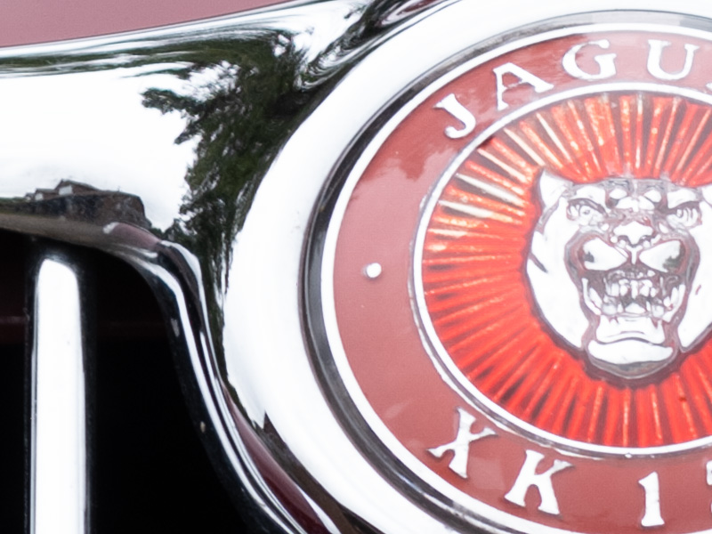
X-Transformer More Detailed
X-Transformer Smoother
Notice how the subtle blue patches in the brickwork on the left become more saturated in the non-RAF images. I'm unsure if the more saturated blue is more accurate or not. Notice the rust on the shaft becomes slightly more saturated in the non-RAF images.
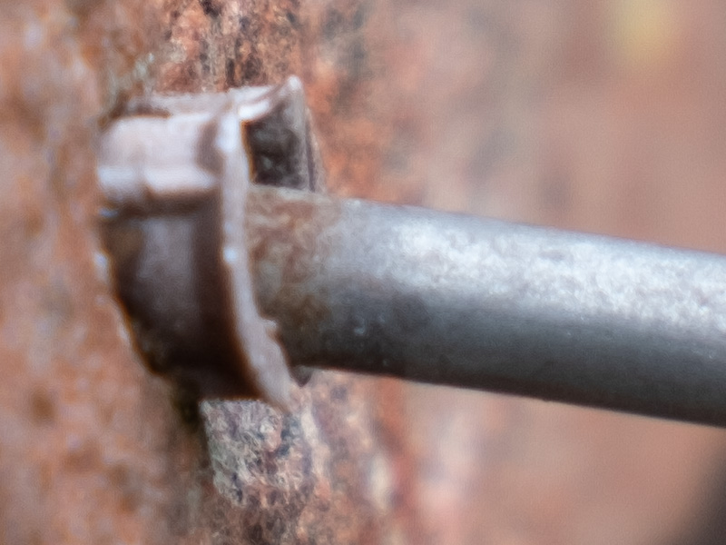
RAF
Enhance Details
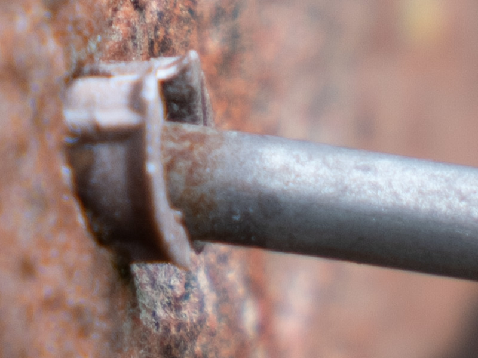
X-Transformer More Detailed
X-Transformer Smoother
Perhaps it's because the photo isn't very sharp, but in this part of the image there is surprisingly little difference between the different images other than the XS image being noticeably softer. The ED and XD versions do render the knot in the centre slightly with slightly more clarity however.
RAF
Enhance Details
X-Transformer More Detailed
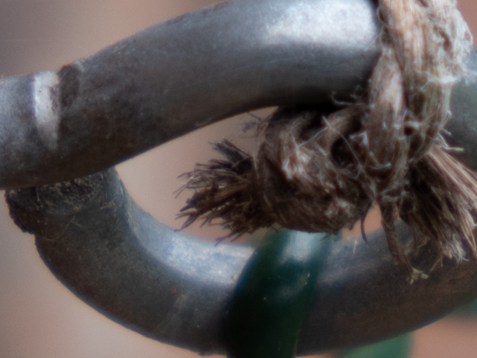
X-Transformer Smoother
Conclusion
The Lightroom Enhanced Details images and the X-Transformer More Detailed images are both an overall improvement over the default RAF rendering. Details are rendered sharper, and the bacterial noise and oil painting effects are eliminated.
I thought the default RAF rendering did hold up quite well, and even seemed to control some of the point highlights better than the other options. I can understand why it is just fine for many people, and yet at the same time it clearly does have some problems.
The X-Transformer Smoother rendering seems to be softer than all of the others. I had expected it to still out-perform the RAF, but it didn't. However it does get rid of the bacterial noise and oil paining effects, which is a big plus. On the basis of these images I'm not sure I would ever choose Smoother over More Detailed rendering in X-Transformer.
The fact that the lens correction metadata isn't passed through intact from X-Transformer to Lightroom does concern me slightly. However, the lens corrections applied from the DNG metadata did appear to be an improvement on the default Lightroom corrections in the photo I looked at in detail, which somewhat negates this concern.
I think it is difficult to choose between Lightroom Enhance Details and X-Transformer More Detailed on image quality alone. My personal feeling from looking at these examples is that X-Transformer More Detailed probably beats Lightroom Enhance Details more often than not, which is all the more impressive given its fast performance. It is over 3 times faster on my computer than Lightroom Enhance Details (about 10 seconds vs 35 seconds), although my GPU isn't great.
Lightroom Enhance Details does allow you to keep your workflow entirely within Lightroom, and it is free (if you already own Lightroom).
X-Transformer it isn't particularly expensive at $30, it is faster to run, and the resulting DNGs are also significantly smaller. For the photo of the man, the RAF was about 57MB, the X-Transformer More Detailed DNG was about 72MB and the Lightroom Enhance Details DNG was about 125MB. If you're simply batch converting all your RAFs to DNG as a one-off step before importing them into Lightroom then the software quickly gets out of your way, and you're back into your normal Lightroom workflow.
On balance then, I think my preference would be to use X-Transformer in More Detailed mode over the other options.
The real shame is that Lightroom can't just use a better demosaicing algorithm to begin with when importing an X-Trans RAF file. Enhance Details is a step in the right direction, but it should really be seamless.